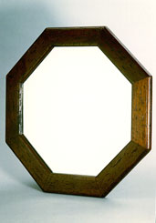

義助慰安婦 —— 李敖百件珍藏義賣藝術品（第64件） 品 名：F3. 歐洲「八卦」鏡 預估價：10 萬 成交價：10 萬 說 明： 中國人好講「易經」、「八卦」為時已久。這面鏡子稱為八卦鏡倒與中國的「易經」、「八卦」無任何關係，主要是因它的造型特殊有趣，共有八個角，用歐洲的老木做成鏡框。 
中國人好講「易經」、「八卦」為時已久。這面鏡子稱為八卦鏡倒與中國的「易經」、「八卦」無任何關係，主要是因它的造型特殊有趣，共有八個角，用歐洲的老木做成鏡框。